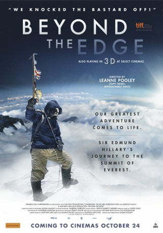

Alternativ: Beyond the Edge (Englischer Titel)
 
 IMDB-Wertung: 6.8 / 10
IMDB-Wertung: 6.8 / 10  Metascore:
Metascore: 
1953 machten sich Sir Edmund Hillary und ein ganzes Expeditionsteam auf den Weg, die letzte große Herausforderung der Erde anzunehmen: als erste Menschen den höchsten Berg der Welt, den Mount Everest, zu erklimmen. Gemeinsam mit Tenzing Norgay aus Nepal kämpfte Hillary, ein Imker und Bergsteiger aus Auckland, Neuseeland, gegen seine eigenen Dämonen und die Gewalten der Natur, um den Mount Everest zu erobern. Mit einer für heutige Verhältnisse bescheidenen Ausrüstung und mit tückischen Winden, Temperaturen unter Null und Höhenkrankheiten konfrontiert, schafften die beiden Bergsteiger das Unmögliche und erreichten schließlich als Erste den Gipfel.
Jahr: 2013
Dauer: 90 Minuten
FSK:
Land: Neuseeland Studio: PolybandTonspuren: DTS - ,
Untertitel:
Auflösung: 1080p (1920x1080) Größe: 6410 MB
Genre: Drama, Abenteuer, Dokumentation, Geschichte
Regisseur: Leanne Pooley
Drehbuch: Matthew Metcalfe, Leanne Pooley, Leanne Pooley
Soundtrack: David Long
Darsteller:
Datei: X:\Dokumentationen\Sport\Beyond the Edge - Sir Edmund Hillarys Aufstieg zum Gipfel des Everest (2013, FSK, 1920x1080) 3D.mkv seit 03.03.2015
Festplatte: HD Serien(SU-Z)+Dokus+Musik
 Es gibt insgesamt 34 Filme in der Gruppe 'Dokumentationen\Sport'
Es gibt insgesamt 34 Filme in der Gruppe 'Dokumentationen\Sport'